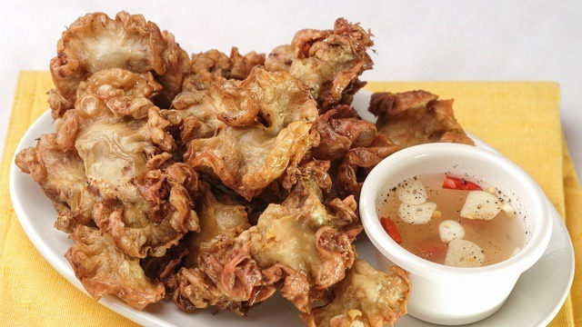

Procedures
- Arrange the ruffle fat, whole peppercorn, 2 tablespoons salt, and bay leaves in a cooking pot. Pour-in water. Let boil. Cover and then simmer for 1 hour.
- Turn the heat off. Remove the boiled ruffle fat from the pot and then let the water drip-off.
- Rub the remaining salt all over the ruffled fat. Set aside.
- Meanwhile, heat the cooking oil in a deep fryer or a deep cooking pot.
- When the oil gets hot, slowly add-in the ruffled fat. Deep fry in low to medium heat until the texture becomes crisp and the color turns medium brown.
- Remove from the deep fryer or cooking pot. Arrange in a plate lined with paper towels to absorb the oil.
- Serve with spiced vinegar.
Ingredients
- 2 lbs. ruffle fat
- 1 tablespoon whole peppercorn
- 5 dried bay leaves
- 2 ½ tablespoons sea salt
- 4 cups canola oil
- 6 cups water